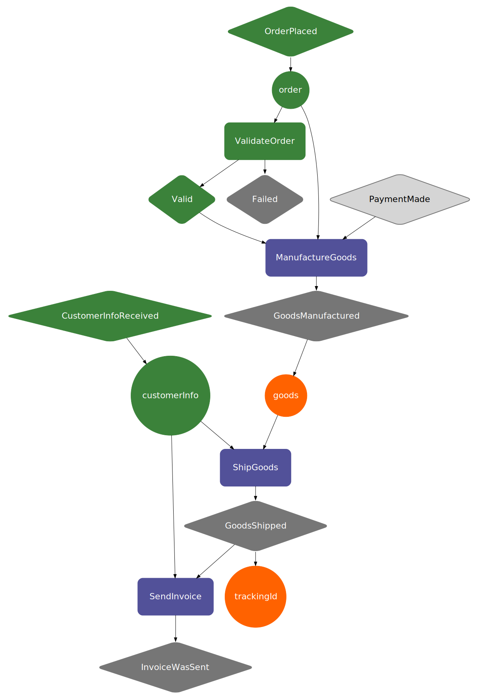

The Akka Based Runtime
Baker.akka(config, actorSystem)
Baker provider several constructors to build a runtime to run your Recipes on. The current implementations are o Akka based, one in local mode, and another in cluster mode.
Note: We recommend reviewing also Akka configuration.
import akka.actor.ActorSystem
import com.ing.baker.runtime.scaladsl.Baker
import com.typesafe.config.{Config, ConfigFactory}
val actorSystem: ActorSystem = ActorSystem("WebshopSystem")
val config: Config = ConfigFactory.load()
val baker: Baker = Baker.akka(config, actorSystem)
import akka.actor.ActorSystem;
import com.ing.baker.runtime.javadsl.Baker;
import com.typesafe.config.Config;
import com.typesafe.config.ConfigFactory;
ActorSystem actorSystem = ActorSystem.create("WebshopSystem");
Config config = ConfigFactory.load();
Baker baker = Baker.akka(config, actorSystem);
This last code snippet will build a Baker runtime and load all configuration from your default application.conf located
in the resources directory. You can see more about configuration on this section.
Alternatively there is a constructor that will provide the default configuration for a local mode Baker, this is recommended for tests.
val baker: Baker = AkkaBaker.localDefault(actorSystem)
Baker baker = AkkaBaker.javaLocalDefault(actorSystem);
Advantages of the Cluster Mode
The capabilities gained when in cluster mode are:
- Elasticity: by adding/removing nodes to the cluster.
- Resilience:
RecipeInstancesare automatically restored in a new node when the hosting node fails. (For this you need to configure a distributed data store like Cassandra) - Routing: You can fire
EventInstancesfrom anywhere on the cluster, and Baker will ensure that the correspondingRecipeInstancereceives the firing event.
Note: To run on cluster mode you need to configure a distributed data store, we highly recommend using Cassandra.
InteractionInstance.from(object) (Reflection API)
As part of our efforts to ease the creation of InteractionInstances we created this function that uses the Scala and the
Java reflection capabilities to create an InteractionInstance from an instance of a class.
The name of the InteractionInstance will be taken from the name of the implementing interface (Java) or trait (Scala)
(it must match the name of the Interaction at the Recipe).
The interface MUST declare a public method called apply, and the types must match those of the expected provided ingredients.
Notice that his function might throw an exception if the instance is not correctly done (this is why in Scala the API is named "unsafe").
import com.ing.baker.runtime.scaladsl.InteractionInstance
import scala.concurrent.Future
import scala.concurrent.ExecutionContext.Implicits.global
sealed trait ReserveItemsOutput
case class OrderHadUnavailableItems(unavailableItems: List[String]) extends ReserveItemsOutput
case class ItemsReserved(reservedItems: List[String]) extends ReserveItemsOutput
trait ReserveItems {
def apply(orderId: String, items: List[String]): Future[ReserveItemsOutput]
}
class ReserveItemsInstance extends ReserveItems {
override def apply(orderId: String, items: List[String]): Future[ReserveItemsOutput] = {
// Http call to the Warehouse service
val response: Future[Either[List[String], List[String]]] =
// This is mocked for the sake of the example
Future.successful(Right(items))
// Build an event instance that Baker understands
response.map {
case Left(unavailableItems) =>
OrderHadUnavailableItems(unavailableItems)
case Right(reservedItems) =>
ItemsReserved(reservedItems)
}
}
}
val reserveItemsInstance: InteractionInstance =
InteractionInstance.unsafeFrom(new ReserveItemsInstance)
import com.ing.baker.runtime.javadsl.InteractionInstance;
import com.ing.baker.runtime.javadsl.Interaction;
/** Java interface used for the Recipe */
public interface ReserveItems extends Interaction {
interface ReserveItemsOutcome {}
class OrderHadUnavailableItems implements ReserveItemsOutcome {
public final List<String> unavailableItems;
public OrderHadUnavailableItems(List<String> unavailableItems) {
this.unavailableItems = unavailableItems;
}
}
class ItemsReserved implements ReserveItemsOutcome {
public final List<String> reservedItems;
public ItemsReserved(List<String> reservedItems) {
this.reservedItems = reservedItems;
}
}
@FiresEvent(oneOf = {OrderHadUnavailableItems.class, ItemsReserved.class})
ReserveItemsOutcome apply(@RequiresIngredient("orderId") String id, @RequiresIngredient("items") List<String> items);
}
/** Implementation of the interface used for creating an InteractionInstance */
public class ReserveItems implements JWebshopRecipe.ReserveItems {
// The body of this method is going to be executed by the Baker runtime when the ingredients are available.
@Override
public ReserveItemsOutcome apply(String id, List<String> items) {
return new ReserveItems.ItemsReserved(items);
}
}
/** Create an InteractionInstance from an instance of the ReserveItems implementation */
InteractionInstance reserveItemsInstance = InteractionInstance.from(new ReserveItems());
baker.addInteractionInstance(interactionInstance)
The Baker runtime requires you to add all InteractionInstances before adding any related CompiledRecipes. This can
be done using the baker.addInteractionInstance(interactionInstance) or the baker.addInteractionInstances(intance1, instance2, ...)
APIs.
Note: in Java the api returns a CompletableFuture<BoxedUnit>, this is because the API is implemented in Scala, so
Scala's Unit get translated to BoxedUnit, but you should you ignore it and consider it as good as Java's void,
except it comes in a CompletableFuture that will help you handle async programming.
val baker: Baker = AkkaBaker.localDefault(actorSystem)
val reserveItemsInstance: InteractionInstance = InteractionInstance.unsafeFrom(new ReserveItems())
val result: Future[Unit] = baker.addInteractionInstance(reserveItemsInstance)
Baker baker = AkkaBaker.javaLocalDefault(actorSystem);
InteractionInstance reserveItemsInstance = InteractionInstance.from(new ReserveItems());
CompletableFuture<BoxedUnit> = baker.addInteractionInstance(reserveItemsInstance);
RecipeCompiler.compile(recipe)
Recipes once built must be converted into a data structure called CompiledRecipe that lets RecipeInstances
to understand, store and run your process. These can be used to create a new RecipeInstance from a baker
runtime that contains both a CompiledRecipe and the required InteractionInstances, or they can as well be converted
into a visualziation.
import com.ing.baker.compiler.RecipeCompiler
import com.ing.baker.il.CompiledRecipe
val compiledRecipe: CompiledRecipe = RecipeCompiler.compileRecipe(recipe)
import com.ing.baker.compiler.RecipeCompiler;
import com.ing.baker.il.CompiledRecipe;
CompiledRecipe compiledRecipe = RecipeCompiler.compileRecipe(recipe);
baker.addRecipe(RecipeRecord.of(compiledRecipe))
Once Recipes have been transformed into CompiledRecipes they must be added to a baker runtime. The baker.addRecipe(RecipeRecord.of(compiledRecipe))
API will do so and return an id that you can use to reference the added recipe later on.
Note: Before doing this, baker requires you to add all related InteractionInstances to the runtime, this is because baker
does validation to ensure that every recipe is runnable from the previously added InteractionInstances.
val recipeId Future[String] = baker.addRecipe(RecipeRecord.of(compiledRecipe))
CompletableFuture<String> recipeId = baker.addRecipe(RecipeRecord.of(compiledRecipe));
baker.getAllRecipes()
The baker at runtime can give you a map of all the currently available recipes that has been previously added to Baker.
import com.ing.baker.runtime.scaladsl.RecipeInformation
import scala.concurrent.Future
val allRecipes: Future[Map[String, RecipeInformation]] = baker.getAllRecipes
import com.ing.baker.runtime.javadsl.RecipeInformation;
import java.util.concurrent.CompletableFuture;
import java.util.Map;
CompletableFuture<Map<String, RecipeInformation>> allRecipe = baker.getAllRecipes();
baker.bake(recipeId, recipeInstanceId)
Once the Baker runtime contains a CompiledRecipe and all the associated InteractionInstances then you can use the
baker.bake(recipeId, recipeInstanceId) API to create a RecipeInstance that will contain the state of your process
and execute any InteractionInstance as soon as all its required InteractionIngredients are available.
Note: This API requires you to choose a recipeInstanceId, the API does not provide one for you, this is so that
you can manage this reference as required.
Note: in Java the api returns a CompletableFuture<BoxedUnit>, this is because the API is implemented in Scala, so
Scala's Unit get translated to BoxedUnit, but you should you ignore it and consider it as good as Java's void,
except it comes in a CompletableFuture that will help you handle async programming.
val program: Future[Unit] = for {
_ <- baker.addInteractionInstance(interactionInstances)
recipeId <- baker.addRecipe(RecipeRecord.of(compiledRecipe))
recipeInstanceId = "my-id"
_ <- baker.bake(recipeId, recipeInstanceId)
} yield ()
String recipeInstanceId = "my-id";
CompletableFuture<BoxedUnit> result = baker.addInteractionInstace(reserveItemsInstance)
.thenCompose(ignore -> baker.addRecipe(RecipeRecord.of(compiledRecipe)))
.thenCompose(recipeId -> baker.bake(recipeId, recipeInstanceId));
EventInstance.from(object)
As part of our efforts to ease the creation of EventInstances, we added a function that uses Java and Scala reflection
to create EventInstances from class objects.
The name of the EventInstance will be taken from the name of the class (Java) or case class (Scala)
(it must match the name of the Event at the Recipe). And the argument names and types of the constructors will be
translated to IngredientInstances with corresponding names and baker types.
Notice that this function might throw an exception if the event is not correctly done (this is why in Scala the API is named "unsafe").
import com.ing.baker.runtime.scaladsl.EventInstance
case class OrderPlaced(orderId: String, items: List[String])
val firstOrderPlaced: EventInstance =
EventInstance.unsafeFrom(OrderPlaced("order-id", List("item1", "item2")))
import com.ing.baker.runtime.javadsl.EventInstance;
class OrderPlaced {
String orderId;
List<String> items;
public OrderPlaced(String orderId, List<String> items) {
this.orderId = orderId;
this.items = items;
}
}
EventInstance firstOrderPlaced =
EventInstance.from(new JWebshopRecipe.OrderPlaced("order-uuid", items));
baker.fireEvent(recipeInstanceId, eventInstance)
After creation of a RecipeInstance, you use one of the variations of baker.fireEvent(recipeInstanceId, eventInstance)
to fire your EventInstances and start/continue the process flow. There are several supported semantics for firing an
event which depend on the moment you want to get notified and continue your asynchronous computation, these are the 4
different moments:
-
When the event got accepted by the
RecipeInstancebut has not started cascading the execution ofInteractionInstances. For this use theBaker.fireEventAndResolveWhenReceived(recipeInstanceId, eventInstance)API. This will return aFuture[SensoryEventStatus]enum notifying of the outcome (the event might get rejected). -
When the event got accepted by the
RecipeInstanceand has finished cascading the execution ofInteractionInstancesup to the point that it requires moreEventInstances(SensoryEvents) to continue, or the process has finished. For this use theBaker.fireEventAndResolveWhenCompleted(recipeInstanceId, eventInstance)API. This will return aFuture[EventResult]object containing aSensoryEventStatus, theEventnames that got fired in consequence of thisSensoryEvent, and the current availableIngredientsoutput of theInteractionInstancesthat got executed as consequence of theSensoryEvent. -
You want to do something on both of the previously mentioned moments, then use the
Baker.fireEvent(recipeInstanceId, eventInstance)API, which will return anEventResolutionsobject which contains bothFuture[SensoryEventStatus]andFuture[EventResult](or itsCompletableFuture<A>equivalents in Java). -
As soon as an intermediate
Eventfires from one of theInteractionInstancesthat execute as consequence of the firedSensoryEvent. For this use theBaker.fireEventAndResolveOnEvent(recipeInstanceId, eventInstance, onEventName)API. This will return a similarFuture[EventResultto the one returned byBaker.fireEventAndResolveWhenCompletedexcept the data will be up to the moment theonEventNamewas fired.
correlationId
Optionally you may provide a correlation id when firing a EventInstance. The purpose of this identifier is idempotent
event delivery: when sending the same event correlation id multiple times, only the first will be processed.
This can be applied to the OrderPlaced event for example.
val correlationOrderId = "a unique order id"
for {
statusA <- baker.processEventAndResolveWhenReceived(recipeInstanceId, orderPlacedEvent, correlationOrderId)
_ = assert(statusA == Received)
statusB <- baker.processEventAndResolveWhenReceived(recipeInstanceId, orderPlacedEvent, correlationOrderId)
_ = assert(statusB == AlreadyReceived)
} yield ()
String correlationOrderId = "a unique order id";
SensoryEventStatus statusA = baker
.processEventAndResolveWhenReceived(recipeInstanceId, orderPlacedEvent, correlationOrderId);
.join();
assert(statusA == Received);
SensoryEventStatus statusB = baker
.processEventAndResolveWhenReceived(recipeInstanceId, orderPlacedEvent, correlationOrderId);
.join();
assert(statusB == AlreadyReceived);
SensoryEventStatus
| Status | Description |
|---|---|
Received |
The event was received normally |
AlreadyReceived |
An event with the same correlation id was already received |
ProcessDeleted |
The process instance was deleted |
ReceivePeriodExpired |
The receive period for the process instance has passed |
FiringLimitMet |
The firing limit for the event was met |
baker.getRecipeInstanceState(recipeInstanceId)
baker.getInteractionInstanceState(recipeInstanceId) will return an InteractionInstanceState object which
contains all the event names with timestamps that have executed, and the current available provided ingredient data.
import com.ing.baker.runtime.scaladsl.RecipeInstanceState
val state: Future[RecipeInstanceState] = baker.getRecipeInstanceState(recipeInstanceId)
import com.ing.baker.runtime.javadsl.RecipeInstanceState;
CompletableFuture<RecipeInstanceState> state = baker.getRecipeInstanceState(recipeInstanceId);
baker.getAllInteractionInstancesMetadata()
Returns the recipeId, recipeInstanceId and creation timestamp of all running RecipeInstances.
Note: Can potentially return a partial result when baker runs in cluster mode because not all shards might be reached within the given timeout.
Note: Does not include deleted RecipeInstances.
baker.getVisualState(recipeInstanceId, style)
Another method of fetching state is the visual representation of it. You can do that with the Baker.getVisualState(recipeInstanceId)
API. This will return a GraphViz string like the visualization api that you can convert into an image.
Here is a visualization of the state of another webshop example, one can clearly see that the process is flowing correctly without failures and that it is still waiting for the payment sensory event to be fired.
val state: Future[String] = baker.getVisualState(recipeInstanceId)
CompletableFuture<String> state = baker.getVisualState(recipeInstanceId);

baker.registerEventListener(recipeName, listenerFunction)
Registers a listener to all runtime events for this baker instance.
Note that: - The delivery guarantee is AT MOST ONCE. Practically this means you can miss events when the application terminates (unexpected or not). - The delivery is local (JVM) only, you will NOT receive events from other nodes when running in cluster mode.
Because of these constraints you should not use an event listener for critical functionality. Valid use cases might be: - logging - metrics - unit tests
baker.registerEventListener((recipeInstanceId: String, event: EventInstance) => {
println(s"Recipe instance : $recipeInstanceId processed event ${event.name}")
})
BiConsumer<String, EventInstance> handler = (String recipeInstanceId, EventInstance event) ->
System.out.println("Recipe Instance " + recipeInstanceId + " processed event " + event.name());
baker.registerEventListener(handler);
baker.registerBakerEventListener(listenerFunction)
Registers a listener to all runtime BAKER events, these are events that notify what Baker is doing, like RecipeInstances
received EventInstances or CompiledRecipes being added to baker.
Note that: - The delivery guarantee is AT MOST ONCE. Practically this means you can miss events when the application terminates (unexpected or not). - The delivery is local (JVM) only, you will NOT receive events from other nodes when running in cluster mode.
Because of these constraints you should not use an event listener for critical functionality. Valid use cases might be: - logging - metrics - unit tests
import com.ing.baker.runtime.scaladsl._
baker.registerBakerEventListener((event: BakerEvent) => {
event match {
case e: EventReceived => println(e)
case e: EventRejected => println(e)
case e: InteractionFailed => println(e)
case e: InteractionStarted => println(e)
case e: InteractionCompleted => println(e)
case e: ProcessCreated => println(e)
case e: RecipeAdded => println(e)
}
})
import com.ing.baker.runtime.javadsl.BakerEvent;
baker.registerBakerEventListener((BakerEvent event) -> System.out.println(event));
baker.retryInteraction(recipeInstanceId, interactionName)
It is possible that during the execution of a RecipeInstance it becomes blocked, this can happen either because it
is directly blocked by an exception (and the FailureStrategy of the Interaction of the Recipe was set to block)
or that the retry strategy was exhausted. At this point it is possible to resolve the blocked interaction in 2 ways.
This one involves forcing another try, resulting either on a successful continued process, or again on a failed state,
to check this you will need to request the state of the RecipeInstance again.
Note: this behaviour can be automatically preconfigured by using the RetryWithIncrementalBackoff FailureStrategy
on the Interaction of the Recipe
val program: Future[Unit] =
baker.retryInteraction(recipeInstanceId, "ReserveItems")
CompletableFuture<BoxedUnit> program =
baker.retryInteraction(recipeInstanceId, "ReserveItems");
baker.resolveInteraction(recipeInstanceId, interactionName, event)
It is possible that during the execution of a RecipeInstance it becomes blocked, this can happen either because it
is directly blocked by an exception or that the retry strategy was exhausted. At this point it is possible to resolve
the blocked interaction in two ways. This one involves resolving the interaction with a chosen EventInstance to replace
the one that would have had been computed by the InteractionInstance.
Note: this behaviour can be automatically preconfigured by using the FireEventAfterFailure(eventName) FailureStrategy
on the Interaction of the Recipe
val program: Future[Unit] =
baker.resolveInteraction(recipeInstanceId, "ReserveItems", ItemsReserved(List("item1")))
CompletableFuture<BoxedUnit> program =
baker.resolveInteraction(recipeInstanceId, "ReserveItems", new ItemsReserved(List("item1")));
baker.stopRetryingInteraction(recipeInstanceId, interactionName)
If an Interaction is configured with a RetryWithIncrementalBackoff FailureStrategy then it will not stop retrying
until you call this API or a successful outcome happens from the InteractionInstance.
val program: Future[Unit] =
baker.stopRetryingInteraction(recipeInstanceId, "ReserveItems")
CompletableFuture<BoxedUnit> program =
baker.stopRetryingInteraction(recipeInstanceId, "ReserveItems");